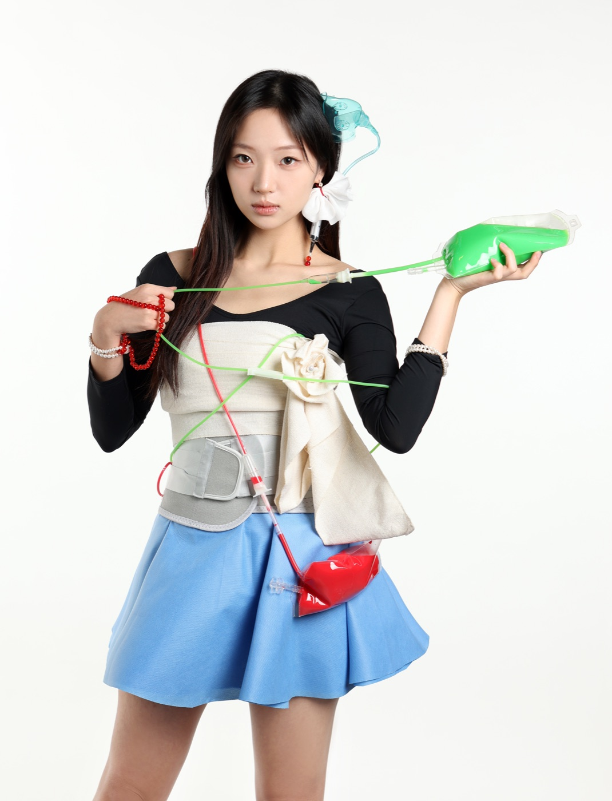
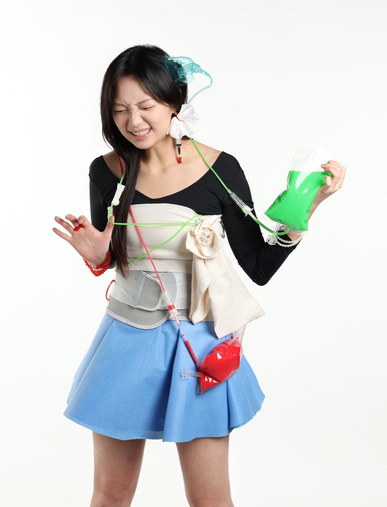
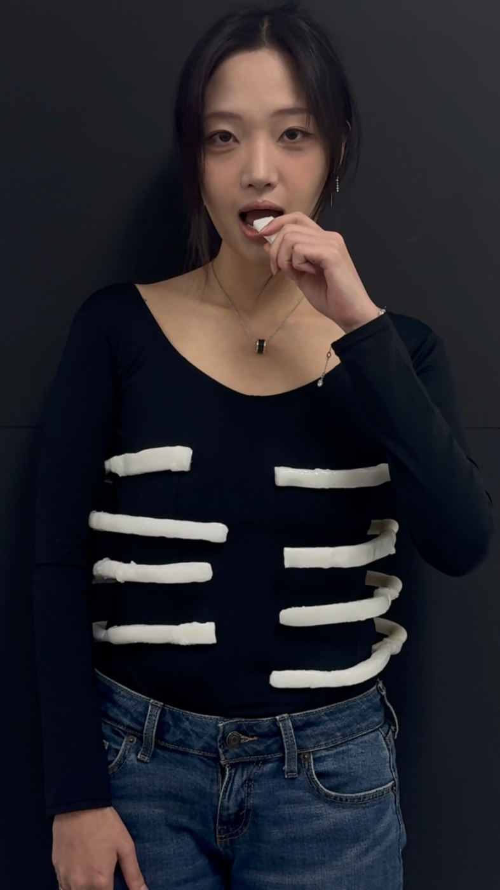
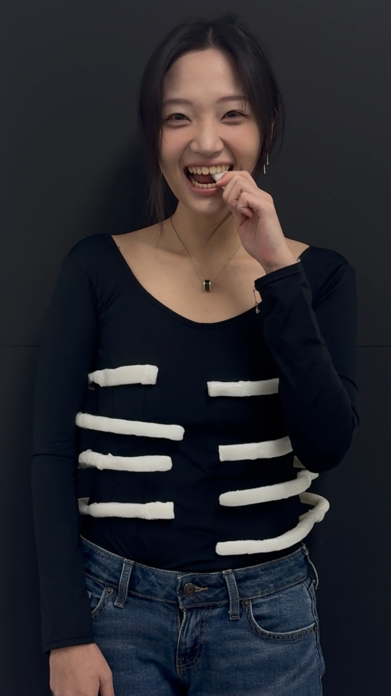
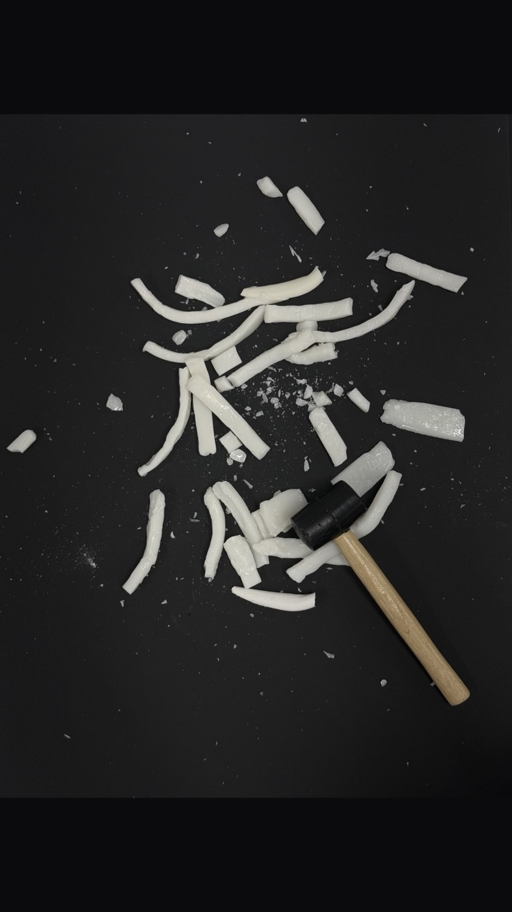

Louvre Museum, Paris


Artist & Scholar · 2018 — 2026
An eight-year record of drawing, looking, and wandering — assembled as a working archive for art-college admission. Every plate is an original; every journey is first-hand.








Plate 01 / 18
graphite on paper
A snow leopard and a hooded child keep the same silence; a cupped hand guards the last warm thing.
Plate 02 / 18
graphite on paper
A drip stand waits by a bed while the leaves outside burn green, asking nothing of the body.
Plate 03 / 18
acrylic on canvas
A city laid out the way a child arranges sweets — trees kept in the seams, no one in sight.
Plate 04 / 18
oil on canvas
Head-down under the fall, lilies in her arms: water is the one place a body need not hold itself.
Plate 05 / 18
oil on canvas
A school day emptied onto a bed; every object still holding the shape of the hand.
Plate 06 / 18
acrylic on panel
Headphones over a face drawn twice — one looking out, one hearing from further away.
Plate 07 / 18
acrylic on canvas
Four black panels laid over the valley, as if the view had agreed to keep part of itself hidden.
Plate 08 / 18
acrylic and collage
Curled under water, flowers drifting through a body drawn thin enough to show the frame behind it.
Plate 09 / 18
oil on canvas
A column crosses the frozen ground; below it the reflections hang down like dripping roots.
Plate 10 / 18
oil on canvas
At dusk a girl lies in the sand, a turtle\u2019s shell strapped to her back, waiting to come back different.
Plate 11 / 18
acrylic and gouache
Pink air, a blue stair climbing to a green door, fish swimming where the sky should be.
Plate 12 / 18
mixed media on panel
Two fighting fish, a spiral worked almost to a shell, and stones — each in its own square of dark.
Plate 13 / 18
installation — drawing, glass, red twigs
A head become a cave of hanging roots; beside it, under water, red twigs still drinking.
Plate 14 / 18
installation — diorama with painted sea
A painted sunset standing out of real sand; inside a turtle\u2019s shell, one lamp, one desk, one figure.
Plate 15 / 18
installation — mural and figures
One girl stands straight while two bodies lie below her — as if standing had to be paid for.
Plate 16 / 18
drawing — ink and watercolour
One red line that never lifts: profiles, shoulders, hands — and a torso drawn from behind, no head.
Plate 17 / 18
performance — three frames, replayed
Three takes of one held moment: the invitation has to be made again, each time from the start.
Plate 18 / 18
performance — five frames, replayed
The brace that held her spine is unlaced until only a laugh is left — then broken into a heart, beside the hammer.
Cultural Journeys
Photographs only, one room per stop.


Journalism
Eleven pieces as a student reporter for the Herald — exhibition reviews, artist interviews, and the questions a viewer asks in the room.

“Two versions of the same beloved character locked in an argument neither one can win, which turns out to be the closest thing this show offers to a definition of what it means to live beside someone else.”Read the original at Herald Insight

“The exhibition frames Korean conceptual art not as a repetition of Western dematerialization but as a set of responses shaped by the country’s own unique historical conditions. In an era saturated with capital and image, the show’s central question, what counts as conceptual art at all, still feels worth asking.”Read the original at Herald Insight

“The exhibition, a collaborative effort between the Centre Pompidou in Paris and Centre Pompidou Hanwha, features 112 works by 54 artists, including 91 pieces from the Paris collection alongside 21 works by 11 Korean modern and contemporary artists in a special section titled ‘Korea Focus.’”Read the original at Herald Insight

“Rather than presenting his career in strict chronological order, the exhibition is organized into six thematic sections: ‘Versions,’ ‘Latin America,’ ‘Religion,’ ‘Bullfight,’ ‘Still Life,’ and ‘Circus’ — allowing visitors to follow the major subjects that shaped Botero’s work over six decades.”Read the original at Herald Insight

“Spanning over 50 works across four sections, the exhibition traces Hirst’s artistic evolution from his earliest experiments at Goldsmiths, University of London, to his most iconic large-scale installations — offering Korean audiences an unprecedented encounter with one of contemporary art’s most provocative figures.”Read the original at Herald Insight

“The exhibition draws from a collection of approximately 11,800 works accumulated over more than fifty years of acquisitions and includes nine pieces from the Lee Kun-hee Collection,” organized “around six thematic clusters — abstraction, experimentation, figuration, hybridity, conceptual art, and documentary.”Read the original at Herald Insight

“Its Korean title draws from the word sak-da, a verb that carries two opposite registers at once: to rot and decay, and to ferment and ripen into something better. That ambivalence forms the show’s central argument.” — “Sak-da: The Poetics of Decomposition” asks what happens when the museum’s promise of permanence is refused.Read the original at Herald Insight